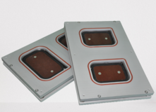
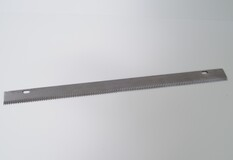
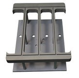

› Промислове обладнання
Обладнання
Якісне харчове обладнання для всіляких підприємств – це можливість виробляти великі обсяги продукції, дотримуючись всіх необхідних стандартів та сертифікатів. Тому наша компанія AxisMetal пропонує у продаж надійне обладнання для роботи, яке відповідає потрібній кількості технічних характеристик. В асортименті компанії представлено:
-
Матриця 400х300mm на напівавтоматичний трейсилер
Ціна: 55 400 грн
-
Матриця 430х350mm на напівавтоматичний трейсилер

Ціна: 75 700 грн
-
Матриця 250х200mm на ручний трейсилер

Ціна: 18 550 грн
-
Ніж для трейсилера, круглий

Ціна: 2 500 грн
-
Ніж для трейсилера, прямокутний
Ціна: 2 500 грн
-
Тефлонована паяльна плита на термоформер

Ціна: 18 250 грн
-
Комплект повздовжньої різки м'якої плівки на термоформер

Ціна: 40 000 грн
-
Комплект поперечної різки м'якої плівки на термоформер

Ціна: 40 000 грн
-
Ніж для поперечної різки м'якої плівки на термоформер
Ціна: 1 500 грн
-
Комплект формовки на термоформер

Ціна: 120 000 грн
-
Комплект запайки на термоформер
Ціна: 50 000 грн
-
Настільний ручний трейсилер SOLDER MN-1

Ціна: 34 800 грн
-
Підлоговий напівавтоматичний трейсилер LIPOVAK KV620

Ціна: 718 593 грн
-
Матриця 412 х 332 мм для термоформера на 4 лотки

Ціна: 280 000 грн
Окремо запропоновані необхідні запчастини для термозапайкової техніки.
Завдяки індивідуальному підходу до кожного клієнта, нашій команді фахівців вдається запропонувати у продаж високоякісні трейсилери, які можуть запаювати лотки різноманітних форм та розмірів. За рахунок тривалих експериментів нам вдалося створити найкращі інженерні рішення, згідно з якими всі замовники можуть обрати та купити обладнання на будь-який бюджет.
Особливості напівавтоматичних трейсилерів
Напівавтоматичний трейсилер або зварювач лотків – це спеціальний апарат, який виконує якісне, надійне пакування контейнерів з різною продукцією, використовуючи плівку.
Представлені пристрої вважаються незамінними на таких підприємствах, як:
Незважаючи на конкретну сферу експлуатації, такі трейсилери можна використовувати таким чином:
| Автономно | Коли зварювач експлуатується як окремий апарат, який використовується для упаковки всілякої продукції. |
| В основі виробничої лінії | У такому разі зварювач є важливим помічником при виконанні повноцінного виробничого процесу. |
Сучасні зварювачі для максимальної зручності експлуатації мають можливість вимикати функцію заміщення газу в лотку. При цьому показники продуктивності досягають 6-10 циклів за хвилину. Під час використання функції подачі інертного газу продуктивність зменшується до 2-6 циклів.
Ручні трейсилери
Найкращий варіант для невеликих виробництв, супермаркетів, їдалень і т.д., який легко
поміщається на столі
Детальніше
Пельменні машини
Універсальна формувальна пельменна машина спеціально призначена для
роботи в невеликих цехах для виробництва великого асортименту продукції: пельмені, вареники,
равіолі
тощо з різними начинками (м'ясна, овочева)
Детальніше
Термоформери
У нашому асортименті є термоформери, які користуються попитом у
сфері
харчової промисловості. За допомогою такого обладнання можна оперативно створити якісне та
акуратне
пакування, виконане з рулонних плівкових матеріалів.
Детальніше
Трейсилери напівавтоматичного типу
Оптимальне рішення для виробництв з обмеженою продуктивністю за потреби упаковки як з МГС
так і
без нього.
Детальніше
Ручний трейсилер або зварювач
Представлений ручний трейсилер використовується для оперативного пакування різноманітних лотків, контейнерів, у яких знаходяться різні продукти харчування. Найчастіше такі зварювачі експлуатуються в умовах роздрібної торгівлі, дозволяючи запакувати таку продукцію:
01
м'ясні та рибні вироби;
02
ковбаси та сири;
03
зелень, овочі та фрукти;
04
печиво та інше.
Що стосується продуктивності, цей критерій безпосередньо пов'язаний зі швидкістю роботи людини, яка відповідає за упаковку продукції на підприємстві. В результаті буде забезпечено процес герметичного запаювання та упаковки продуктів харчування, які можуть зберігатися протягом певного проміжку часу.
Трейсилери укомплектовані регулятором температур для самостійної корекції температури запайки лотків. Але для цього слід врахувати особливості матеріалу, з яких виконані плівка та лоток.
Щоб забезпечити безпечну та правильну експлуатацію машини, знадобиться провести професійне налагодження пакувального обладнання, яке проводять фахівці компанії AxisMetal. Вони допоможуть провести монтаж, регулювання та тестування агрегату у різних робочих режимах, а також пропонують консультацію для замовника, спрямовану на навчання персоналу користуванню трейсилером.
Термоформувальне обладнання для підприємств
Термоформер відноситься до списку спеціалізованого обладнання, яке призначене для якісного процесу упаковки різних товарів як продовольчих, так і непродовольчих. Автоматичні апарати здатні самостійно створювати надійне пакування. Для формування такої упаковки знадобиться кілька рулонів плівки, за допомогою яких вдало роблять м'які або тверді пакувальні вироби.
Робота пакувальних апаратів здійснюється у кілька основних етапів:
01
Початковий етап – формування лотків із використанням нижньої плівки.
02
Закладка продуктів у вже підготовлені лотки.
03
Вакуумування або наповнення газом, а потім - товар запаюють плівкою з верхнього рулону.
04
Запаяні лотки розрізають спеціальними ножами.
Завдяки активній експлуатації термоформерів на сучасному виробництві вдається продовжити термін зберігання продовольчої продукції. Адже вакуум або газ здатні зберігати не лише свіжість товару, але й його смакові якості, товарний зовнішній вигляд.
Купівля запчастин для термозапайкової техніки

Вибираючи якісні запчастини для термозапаювальної техніки, необхідно звертатися за допомогою до перевірених постачальників та виробників. Наша компанія AxisMetal пропонує власну допомогу в процесі пошуку та підбору певних комплектуючих, деталей для заміни. Причому фахівці готові допомогти підібрати запчастини не тільки для нашого обладнання, а й для термозапаєчної техніки інших виробників – вітчизняних та зарубіжних.
Клієнт може самостійно замовити потрібні деталі в телефонному режимі або замовити діагностику, ремонт апаратів від наших фахівців. Майстер виїжджає за вказаною адресою та проводить ретельну діагностику всього пристрою, визначаючи, які саме запчастини знадобляться і в якій кількості.
В результаті можна підібрати дійсно необхідні деталі на замовлення, визначившись із термінами їх поставки. Вся продукція нашої компанії – це високоякісні комплектуючі, які запропоновані за демократичними цінами з офіційною гарантією. Все це дозволить продовжити експлуатаційні терміни конкретного обладнання, за винятком тривалої простої техніки на виробництві.